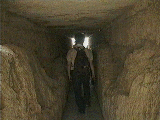
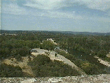

ポン・デュ・ガール （拡大GIF 96K)

 | ローマ人がユゼスの湧き水を111km離れたニームに引くためにガルドン川につくった水道橋。全体の高さは約50ｍある。３層構造になっており、水を引いていた１層目、２層目は現在使われていない。 ３層目は現在でも人や車が通っている。 １層目の水路は中を歩くことができる。一部石の天井が無くなっているところがあり、そこからのぼれば橋のてっぺんも歩くことが可能。ただし手すりはもちろんなし。危険かどうかは自分で判断すべし、ということか。ここからバンジージャンプしたらすごいかもしれない。ちなみにガルドン川は水遊びもできる。泳いでいる人も何人も見かけた。水着持参でいくとよい。 3層のアーチからなる |